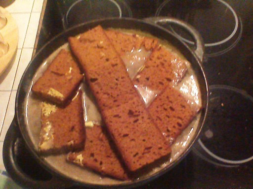

Marine Houzé de l'Aulnoit
Etudiante @Le Wagon
24 ans, Lilloise, jeune diplômée, à la recherche d'un job passionnant!
Mes plats favoris
Welshrecette marmitonQuand le fromage est bien doré, sortir les plats du four, placer un oeuf au plat sur le dessus de chacun d’entre eux, tourner un coup de moulin à poivre et servir rapidement avec des frites et/ou de la salade verte. Et surtout une bière ! |
|
Tarte au maroillesrecette marmitonAvec une bonne laitue assaissonée d'une vinaigrette au vinaigre balsamique que vous pouvez retrouver dans mes recettes : vinaigrette au vinaigre balsamique et moutarde au roquefort, vous avez un repas complet. |
|
|  |
Carbonnaderecette marmitonA servir avec des frites cuites dans du gras de boeuf Ou des tagliatelles. Super recette, tout le monde s'est régalé. Par contre, laisser mijoter au moins 4 h et la passer au four 1 h pour faire bien caraméliser le tout ! |